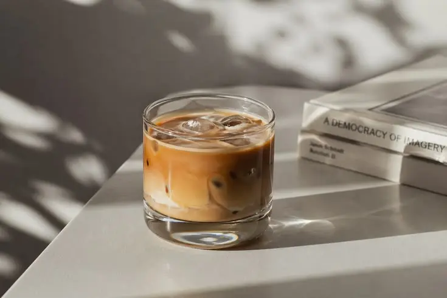
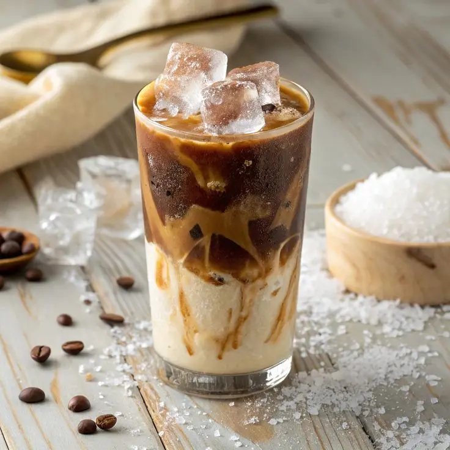
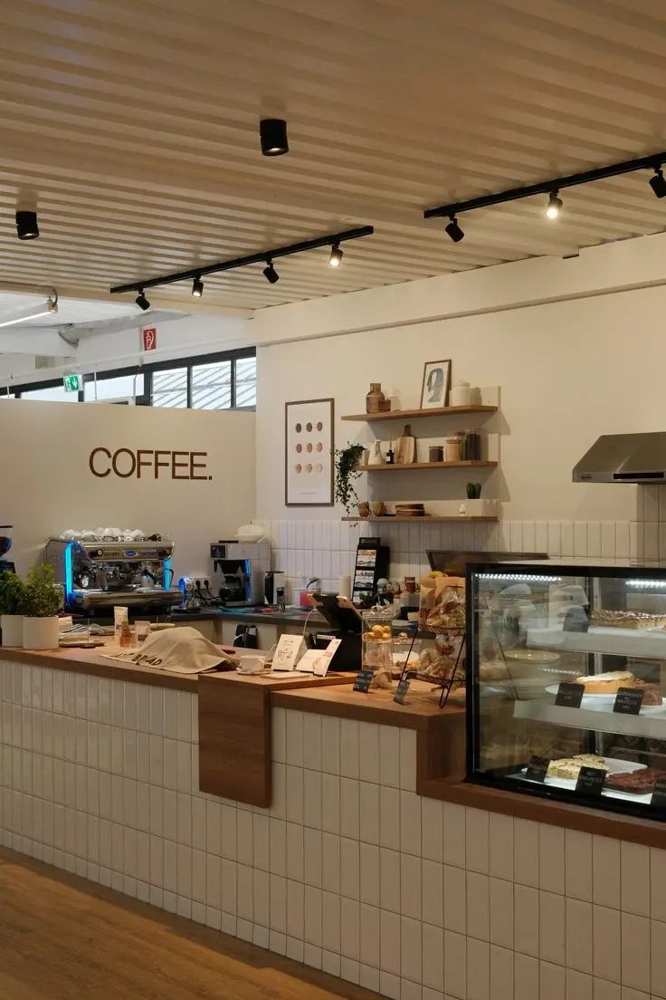

Nikmati Setiap Tegukan di Arah Senja.
Kopi berkualitas tinggi dengan suasana hangat yang menenangkan. Sebuah momen jeda di tengah hiruk-pikuk kota.
Lihat Menu KamiSignature Senja
Kurasi minuman terbaik kami, diracik dengan perlahan untuk menemani momen sore Anda.

Senja Gula Aren
Rp 35.000Espresso blend house khas Arsen dengan susu creamy dan legitnya gula aren asli yang perlahan meleleh.

Sunset Macchiato
Vanilla manis, susu hangat, dan espresso dengan sentuhan karamel.
Rp 38.000
Klepon Latte
Rasa pandan, kelapa sangrai, dan sentuhan kopi pekat.
Rp 40.000
Sebuah Jeda di Balik Riuhnya Kota.
Arsen lahir dari filosofi 'Arah Senja' — sebuah momen magis di mana hari melambat dan kenyamanan dimulai. Kami percaya bahwa secangkir kopi bukan sekadar rutinitas, melainkan ritual merayakan ketenangan.
Setiap biji kopi dipilih dengan seksama, diseduh perlahan di 'slow bar' kami untuk memastikan setiap tegukan memberikan kehangatan yang Anda butuhkan.
From Bean to Cup
Sourcing
Pencarian Biji TerbaikSorting
Seleksi Mutu KetatRoasting
Penyangraian PresisiCupping
Konsistensi RasaBrewing
Seduhan Sempurna
Signature Gula Aren
Double shot espresso berpadu dengan gurihnya susu alami.
Rp 18.000
Classic Cappuccino
Kombinasi espresso yang seimbang dengan susu hangat.
Rp 15.000
Klepon Latte
Minuman kopi dengan rasa klepon yang manis dan gurih.
Rp 40.000
Senja Gula Aren
Espresso blend khas Arsen dengan susu creamy dan legitnya gula aren.
Rp 35.000
Matcha Latte
Minuman berbasis bubuk matcha hijau dengan susu creamy.
Rp 20.000
Lemon Tea
Minuman teh manis dengan rasa lemon yang segar.
Rp 17.000
Potato Chips
Camilan renyah dengan rasa gurih dan sentuhan asli.
Rp 16.000Temukan Arah Senjamu
Temukan outlet Arsen Coffee terdekatmu yang dirancang untuk kenyamanan dan kebersamaan.
Lokasi Outlet
2 outlet strategis di Bandung
Arsen Dago
location_on Jl. Ir. H. Juanda No. 15, Dago
07:00 - 22:00Arsen Buah Batu
location_on Jl. Buah Batu No. 62
08:00 - 23:00Pesan Mejamu Sekarang
Jangan sampai kehabisan tempat, amankan meja kamu sekarang!